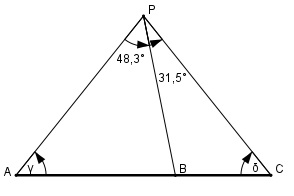

Aufgabe 223 Ein Punkt P soll im Gelände festgelegt werden. Dazu peilt man von ihm aus 3 Punkte A, B und C einer geraden Straße an und misst: AB = 540 m, BC = 325 m, ∡ APB = 48,3° und ∡ BPC = 31,5°. Wie groß sind AP, BP und CP?

δ = 180° - 48,3° - 31.5° - γ δ = 100,2° - γ Im Dreieck BCP: Sinussatz: BP BC ------- = ----------- |*sin δ sin δ sin 31,5° BC * sin (100,2° - γ) BP = ------------------------ sin 31,5° Im Dreieck ABP: Sinussatz: BP AB ------- = ----------- |*sin γ sin γ sin 48,3° AB * sin γ BP = ------------ sin 48,3° Gleichgesetzt: AB * sin γ BC * sin (100,2° - γ) ------------- = ----------------------- |:sin γ sin 48,3° sin 31,5° AB BC * sin (100,2° - γ) ----------- = ----------------------- |*sin 31,5° sin 48,3° sin 31,5° * sin γ AB * sin 31,5° BC * sin (100,2° - γ) ---------------- = ----------------------- |:BC sin 48,3° sin γ AB * sin 31,5° sin (100,2° - γ) ---------------- = ------------------ BC * sin 48,3° sin γ sin (100,2° - γ) 540 m * 0,5225 ----------------- = ----------------- = 1,1628 sin γ 325 m * 0,7466 Mit der Umformung : sin (100,2° - γ) = = sin 100,2° * cos γ – cos 100,2° * sin y ergibt sich : sin (100,2° - γ) ------------------ = sin γ sin 100,2°*cos γ – cos 100,2° * sin y = --------------------------------------- = 1,1628 sin γ sin 100,2° * cos γ – cos 100,2° * sin y ---------------------------------------- = 1,1628 sin γ sin100,2°*cot γ - cos100,2° = 1,1628 |+cos 100,2° sin 100,2°*cot γ = 1,1628 + cos100,2° |:sin100,2° 1,1628 + cos 100,2° cot γ = --------------------- = sin 100,2° 1,1628 + (-0,1771) = --------------------- = 1 --> γ = 45° 0,9842 AB * sin γ 540 m * sin 45° BP = ------------ = ----------------- = sin 48,3° 0,7466 540 m * 0,7071 = ---------------- = 511,4 m 0,7466 Im Dreieck ACP: Fall SWW: Sinussatz: AC AP --------------------- = -------- |*sin δ sin (31,5° + 48,3°) sin δ AC * sin δ AP = -------------- = sin 79,8° (540 m + 325 m) * sin (100,2° - γ) = -------------------------------------- = 0,9842 865 m * sin (100,2° - 45°) = ---------------------------- = 0,9842 865 m * 0,8211 = ---------------- = 721,7 m 0,9842 AC CP ---------------------- = ------- |*sin γ sin (31,5° + 48,3°) sin γ AC * sin γ (540 m + 325 m) * sin 45° CP = ------------ = -------------------------- = sin 79,8° 0,9842 865 m * 0,7071 = ----------------- = 621,5 m 0,9842